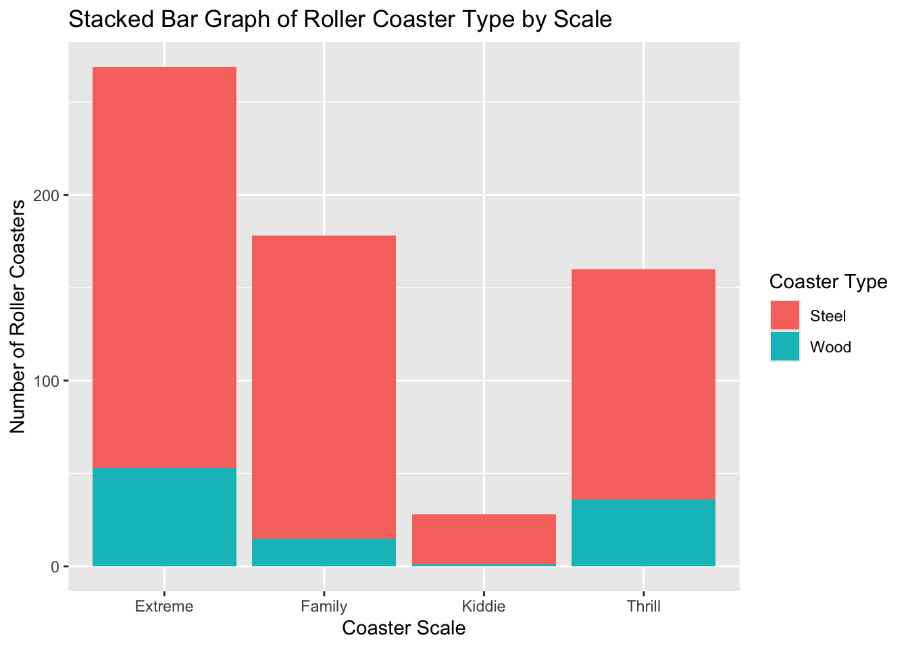
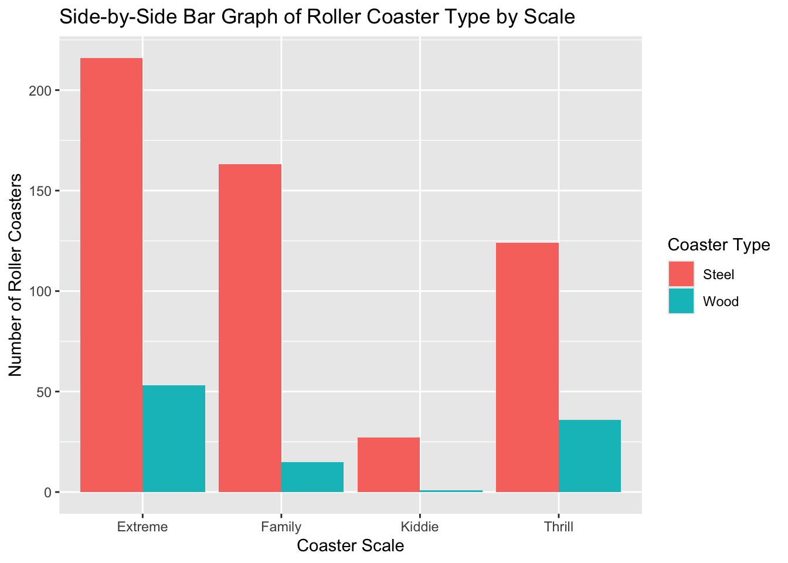

#Install packages as necessary
#install.packages("httr")
#install.packages("jsonlite")Xiao_HW5
Homework 5
Task 1 - Querying an API and a Tidy-Style Function
#Load Packages and API Key
library(httr)
library(jsonlite)
library(tidyverse)── Attaching core tidyverse packages ──────────────────────── tidyverse 2.0.0 ──
✔ dplyr 1.2.1 ✔ readr 2.2.0
✔ forcats 1.0.1 ✔ stringr 1.6.0
✔ ggplot2 4.0.3 ✔ tibble 3.3.1
✔ lubridate 1.9.5 ✔ tidyr 1.3.2
✔ purrr 1.2.2
── Conflicts ────────────────────────────────────────── tidyverse_conflicts() ──
✖ dplyr::filter() masks stats::filter()
✖ purrr::flatten() masks jsonlite::flatten()
✖ dplyr::lag() masks stats::lag()
ℹ Use the conflicted package (<http://conflicted.r-lib.org/>) to force all conflicts to become errorsnews_api_key <- "74a38983f4844f5a8891b351f068b813"1. Use GET() from the httr package to return information about a topic that you are interested in that has been in the news lately (store the result as an R object). Note: We can only look 30 days into the past with a free account.
#Query the API using
news_response <- GET(
url = "https://newsapi.org/v2/everything",
query = list(
q = "artificial intelligence",
from = Sys.Date() - 14, #14 Days Ago
language = "en",
pageSize = 50,
apiKey = news_api_key
)
)
news_responseResponse [https://newsapi.org/v2/everything?q=artificial%20intelligence&from=2026-09-06&language=en&pageSize=50&apiKey=74a38983f4844f5a8891b351f068b813]
Date: 2026-09-21 05:30
Status: 200
Content-Type: application/json; charset=utf-8
Size: 41.7 kB2. Parse what is returned and find your way to the data frame that has the actual article information in it (check content). Note the first column should be a list column!
#Extract news content by parsing the response into an R object
news_content <- content(news_response, as = "parsed", simplifyVector = TRUE)
#Extract articles from the above content
news_articles <- as_tibble(news_content$articles)
#Look at structure of news_articles
str(news_articles)tibble [48 × 8] (S3: tbl_df/tbl/data.frame)
$ source :'data.frame': 48 obs. of 2 variables:
..$ id : chr [1:48] "bbc-news" "the-verge" NA NA ...
..$ name: chr [1:48] "BBC News" "The Verge" "Gizmodo.com" "NPR" ...
$ author : chr [1:48] NA "Robert Hart" "Mike Pearl" "Scott Horsley" ...
$ title : chr [1:48] "Could AI pose a threat to humanity, and can it be regulated?" "More than 1 in 10 chance AI ‘could kill all humans,’ says Anthropic safety lead after colleague quits" "You’ll Never Guess What Trump Wants to Rename Now" "A new Anthropic model seeks to test how AI could impact the U.S. economy" ...
$ description: chr [1:48] "The BBC's AI correspondent Marc Cieslak explains what artificial intelligence is and whether it could cause a t"| __truncated__ "A senior Anthropic safety researcher has said there is more than a 10 percent chance artificial intelligence \""| __truncated__ "The President wants to give his favorite technology a rebrand, but he needs your help." "Will artificial intelligence nibble around the edges of the economy or upend it altogether? A new, interactive "| __truncated__ ...
$ url : chr [1:48] "https://www.bbc.co.uk/news/videos/ckgjqnz6pd2do" "https://www.theverge.com/ai-artificial-intelligence/991927/anthropic-ai-kill-all-humans" "https://gizmodo.com/youll-never-guess-what-trump-wants-to-rename-now-2000814488" "https://www.npr.org/2026/09/09/nx-s1-5961443/ai-anthropic-economy" ...
$ urlToImage : chr [1:48] "https://ichef.bbci.co.uk/ace/branded_news/1200/cpsprodpb/1279/live/c44c1290-b053-11f1-a540-61c3f7fc4e6c.jpg" "https://platform.theverge.com/wp-content/uploads/sites/2/2026/09/STK269_ANTHROPIC_2_A-1.jpg?quality=90&strip=al"| __truncated__ "https://gizmodo.com/app/uploads/2026/09/trump-viewfinder-1200x675.jpg" "https://npr.brightspotcdn.com/dims3/default/strip/false/crop/4822x2712+0+212/resize/1400/quality/85/format/jpeg"| __truncated__ ...
$ publishedAt: chr [1:48] "2026-09-14T16:00:51Z" "2026-09-09T09:56:28Z" "2026-09-19T19:58:23Z" "2026-09-09T13:34:48Z" ...
$ content : chr [1:48] "What is AI? Could it pose a threat to humanity? Can it be regulated or stopped? The BBC's AI correspondent Marc"| __truncated__ "<ul><li></li><li></li><li></li></ul>\r\nThe departing researcher said AI companies are gambling with our lives "| __truncated__ "President Donald Trump simply has no patience for negativity around AI. He says its going to be the Greatest Ec"| __truncated__ "Will artificial intelligence light a fire under the U.S. economy in the coming years? That's been a big questio"| __truncated__ ...#Display first few articles
head(news_articles)# A tibble: 6 × 8
source$id $name author title description url urlToImage publishedAt content
<chr> <chr> <chr> <chr> <chr> <chr> <chr> <chr> <chr>
1 bbc-news BBC N… <NA> Coul… "The BBC's… http… https://i… 2026-09-14… "What …
2 the-verge The V… Rober… More… "A senior … http… https://p… 2026-09-09… "<ul><…
3 <NA> Gizmo… Mike … You’… "The Presi… http… https://g… 2026-09-19… "Presi…
4 <NA> NPR Scott… A ne… "Will arti… http… https://n… 2026-09-09… "Will …
5 <NA> NPR Britt… Key … "Some key … http… https://n… 2026-09-14… "Good …
6 bbc-news BBC N… <NA> Gruf… "Axel Sche… http… https://i… 2026-09-10… "The i…#The resulting object contains info about the articles returned by the query, including the source, author, title, description, URL, publication date, and available article content3. Now write a quick function that allows the user to easily query this API. The inputs to the function should be the title/subject to search for (string), a time period to search from (string - you’ll search from that time until the present), and an API key.
#Query NewsAPI and return the article data frame
query_news <- function(subject, from_date, api_key) {
response <- GET(
url = "https://newsapi.org/v2/everything",
query = list(
q = subject,
from = from_date,
language = "en",
pageSize = 50,
apiKey = api_key
)
)
#Parse JSON response
parsed_response <- content(
response,
as = "parsed",
simplifyVector = TRUE
)
as_tibble(parsed_response$articles)
}Use your function twice to show it works!
#Example 1
travel_news <- query_news(
subject = "travel",
from_date = Sys.Date() - 2,
api_key = news_api_key
)
head(travel_news)# A tibble: 6 × 8
source$id $name author title description url urlToImage publishedAt content
<chr> <chr> <chr> <chr> <chr> <chr> <chr> <chr> <chr>
1 bbc-news BBC … https… Soft… "The failu… http… https://i… 2026-09-18… "An ai…
2 business-… Busi… Roya … I vi… "Nestled i… http… https://i… 2026-09-18… "I tra…
3 business-… Busi… Esthe… We q… "Kang \"Ka… http… https://i… 2026-09-18… "Kang …
4 business-… Busi… Kelse… Get … "Major air… http… https://i… 2026-09-19… "Airli…
5 <NA> Gizm… Ed Ca… Thes… "The shrim… http… https://g… 2026-09-18… "As an…
6 <NA> Boin… Popkin In 1… "In 1973 a… http… https://i… 2026-09-19… "In 19…#Example 2
celebrity_news <- query_news(
subject = "celebrity",
from_date = Sys.Date() - 1,
api_key = news_api_key
)
head(celebrity_news)# A tibble: 6 × 8
source$id $name author title description url urlToImage publishedAt content
<chr> <chr> <chr> <chr> <chr> <chr> <chr> <chr> <chr>
1 buzzfeed Buzzf… Remy … Cele… "\"It's ok… http… https://i… 2026-09-19… "by Re…
2 buzzfeed Buzzf… Henry… If Y… "Wanting s… http… https://i… 2026-09-19… "by He…
3 <NA> Cinem… Carol… As D… "New celeb… http… https://c… 2026-09-19… "When …
4 <NA> Bored… Rocio… Spec… "Lady Gaga… http… https://s… 2026-09-19… "Lady …
5 <NA> Just … Maddy… Mado… "Madonna a… http… https://w… 2026-09-19… "Credi…
6 <NA> The A… Geral… Coll… "The accom… http… https://c… 2026-09-19… "For a…Task 2 - Summarizing Roller Coaster Data
Loading roller coaster data
coaster_data <- read_csv("https://www4.stat.ncsu.edu/online/datasets/635USrollercoasters.csv")Rows: 635 Columns: 21
── Column specification ────────────────────────────────────────────────────────
Delimiter: ","
chr (12): Coaster, Park, City, State, Census Region, AgeGroup, Scale, Type, ...
dbl (9): Year Opened, TopSpeed, MaxHeight, Drop, Length, Duration, # of Inv...
ℹ Use `spec()` to retrieve the full column specification for this data.
ℹ Specify the column types or set `show_col_types = FALSE` to quiet this message.#Examine variable types and convert to factors as needed
str(coaster_data)spc_tbl_ [635 × 21] (S3: spec_tbl_df/tbl_df/tbl/data.frame)
$ Coaster : chr [1:635] "Adrenaline Peak" "Adventure Express" "Afterburn" "Aftershock" ...
$ Park : chr [1:635] "Oaks Amusement Park" "Kings Island" "Carowinds" "Silverwood Theme Park" ...
$ City : chr [1:635] "Portland" "Mason" "Charlotte" "Athol" ...
$ State : chr [1:635] "Oregon" "Ohio" "North Carolina" "Idaho" ...
$ Census Region : chr [1:635] "West" "Midwest" "South" "West" ...
$ Year Opened : num [1:635] 2018 1991 1999 2008 2010 ...
$ AgeGroup : chr [1:635] "3:Newest" "2:Recent" "2:Recent" "3:Newest" ...
$ TopSpeed : num [1:635] 45 35 62 65.6 22 67 35 66 48 50 ...
$ MaxHeight : num [1:635] 72 63 113 192 25 ...
$ Scale : chr [1:635] "Extreme" "Thrill" "Extreme" "Extreme" ...
$ Type : chr [1:635] "Steel" "Steel" "Steel" "Steel" ...
$ Design : chr [1:635] "Sit Down" "Sit Down" "Inverted" "Inverted" ...
$ Drop : num [1:635] 70 47 110 177 22.5 170 20 147 80 144 ...
$ Length : num [1:635] 1050 2963 2956 1204 628 ...
$ Duration : num [1:635] 66 140 167 92 47 190 100 143 110 110 ...
$ Inversions? : chr [1:635] "Yes" "No" "Yes" "Yes" ...
$ # of Inversions: num [1:635] 3 0 6 3 0 6 0 0 0 4 ...
$ Make : chr [1:635] "Gerstlauer Amusement Rides GmbH" "Arrow Dynamics" "Bolliger & Mabillard" "Vekoma" ...
$ Latitude : num [1:635] 45.5 39.4 35.3 47.9 28 ...
$ Longitude : num [1:635] -122.7 -84.3 -80.8 -116.7 -82.6 ...
$ Boundary : chr [1:635] "{\"type\":\"Feature\",\"properties\":{\"CENSUSAREA\":95988.013,\"NAME\":\"Oregon\",\"GEO_ID\":\"0400000US41\",\"| __truncated__ "{\"type\":\"Feature\",\"properties\":{\"CENSUSAREA\":40860.694,\"NAME\":\"Ohio\",\"GEO_ID\":\"0400000US39\",\"L"| __truncated__ "{\"type\":\"Feature\",\"properties\":{\"CENSUSAREA\":48617.905,\"NAME\":\"North Carolina\",\"GEO_ID\":\"0400000"| __truncated__ "{\"type\":\"Feature\",\"properties\":{\"CENSUSAREA\":82643.117,\"NAME\":\"Idaho\",\"GEO_ID\":\"0400000US16\",\""| __truncated__ ...
- attr(*, "spec")=
.. cols(
.. Coaster = col_character(),
.. Park = col_character(),
.. City = col_character(),
.. State = col_character(),
.. `Census Region` = col_character(),
.. `Year Opened` = col_double(),
.. AgeGroup = col_character(),
.. TopSpeed = col_double(),
.. MaxHeight = col_double(),
.. Scale = col_character(),
.. Type = col_character(),
.. Design = col_character(),
.. Drop = col_double(),
.. Length = col_double(),
.. Duration = col_double(),
.. `Inversions?` = col_character(),
.. `# of Inversions` = col_double(),
.. Make = col_character(),
.. Latitude = col_double(),
.. Longitude = col_double(),
.. Boundary = col_character()
.. )
- attr(*, "problems")=<pointer: 0xa4a6d08a0> Some variables represent categorical variables and are converted to factors below.
coaster_data <- coaster_data |>
mutate(
Park = as.factor(Park),
City = as.factor(City),
State = as.factor(State),
CensusRegion = as.factor(.data[['Census Region']]),
AgeGroup = factor(AgeGroup, levels = c(1, 2, 3), labels = c("Older", "Recent", "Newest")),
Scale = as.factor(Scale),
Type = as.factor(Type),
Design = as.factor(Design),
Inversions = as.factor(.data[['Inversions?']]),
Make = as.factor(Make)
)4. Look at how the data is stored and see if everything makes sense.
#Look at structure, dimensions, variable names, and descriptive statistics of the data. Variable types should match its respective type (i.e. chr/factor, int/dbl, and geospatial which won't be used)
str(coaster_data)tibble [635 × 23] (S3: tbl_df/tbl/data.frame)
$ Coaster : chr [1:635] "Adrenaline Peak" "Adventure Express" "Afterburn" "Aftershock" ...
$ Park : Factor w/ 197 levels "Adventure City",..: 130 100 26 155 20 21 75 161 166 99 ...
$ City : Factor w/ 171 levels "Aberdeen","Abilene",..: 118 92 30 12 151 166 122 65 51 44 ...
$ State : Factor w/ 40 levels "Alabama","Arizona",..: 30 28 27 9 7 37 26 10 21 37 ...
$ Census Region : chr [1:635] "West" "Midwest" "South" "West" ...
$ Year Opened : num [1:635] 2018 1991 1999 2008 2010 ...
$ AgeGroup : Factor w/ 3 levels "Older","Recent",..: NA NA NA NA NA NA NA NA NA NA ...
$ TopSpeed : num [1:635] 45 35 62 65.6 22 67 35 66 48 50 ...
$ MaxHeight : num [1:635] 72 63 113 192 25 ...
$ Scale : Factor w/ 4 levels "Extreme","Family",..: 1 4 1 1 2 1 4 1 4 1 ...
$ Type : Factor w/ 2 levels "Steel","Wood": 1 1 1 1 1 1 1 2 2 1 ...
$ Design : Factor w/ 7 levels "Bobsled","Flying",..: 4 4 3 3 4 3 1 4 4 4 ...
$ Drop : num [1:635] 70 47 110 177 22.5 170 20 147 80 144 ...
$ Length : num [1:635] 1050 2963 2956 1204 628 ...
$ Duration : num [1:635] 66 140 167 92 47 190 100 143 110 110 ...
$ Inversions? : chr [1:635] "Yes" "No" "Yes" "Yes" ...
$ # of Inversions: num [1:635] 3 0 6 3 0 6 0 0 0 4 ...
$ Make : Factor w/ 53 levels "Allan Herschell Company",..: 15 2 5 48 53 5 21 21 18 2 ...
$ Latitude : num [1:635] 45.5 39.4 35.3 47.9 28 ...
$ Longitude : num [1:635] -122.7 -84.3 -80.8 -116.7 -82.6 ...
$ Boundary : chr [1:635] "{\"type\":\"Feature\",\"properties\":{\"CENSUSAREA\":95988.013,\"NAME\":\"Oregon\",\"GEO_ID\":\"0400000US41\",\"| __truncated__ "{\"type\":\"Feature\",\"properties\":{\"CENSUSAREA\":40860.694,\"NAME\":\"Ohio\",\"GEO_ID\":\"0400000US39\",\"L"| __truncated__ "{\"type\":\"Feature\",\"properties\":{\"CENSUSAREA\":48617.905,\"NAME\":\"North Carolina\",\"GEO_ID\":\"0400000"| __truncated__ "{\"type\":\"Feature\",\"properties\":{\"CENSUSAREA\":82643.117,\"NAME\":\"Idaho\",\"GEO_ID\":\"0400000US16\",\""| __truncated__ ...
$ CensusRegion : Factor w/ 4 levels "Midwest","Northeast",..: 4 1 3 4 3 3 2 1 1 3 ...
$ Inversions : Factor w/ 2 levels "No","Yes": 2 1 2 2 1 2 1 1 1 2 ...dim(coaster_data)[1] 635 23names(coaster_data) [1] "Coaster" "Park" "City" "State"
[5] "Census Region" "Year Opened" "AgeGroup" "TopSpeed"
[9] "MaxHeight" "Scale" "Type" "Design"
[13] "Drop" "Length" "Duration" "Inversions?"
[17] "# of Inversions" "Make" "Latitude" "Longitude"
[21] "Boundary" "CensusRegion" "Inversions" summary(coaster_data) Coaster Park City
Length :635 Six Flags Magic Mountain: 18 Valencia : 18
N.unique :482 Cedar Point : 16 Sandusky : 16
N.blank : 0 Six Flags Great America : 14 Orlando : 15
Min.nchar: 2 Carowinds : 13 San Antonio: 15
Max.nchar: 46 Hersheypark : 13 Gurnee : 14
Kings Island : 12 Ocean City : 14
(Other) :549 (Other) :543
State Census Region Year Opened AgeGroup
California : 75 Length :635 Min. :1920 Older : 0
Pennsylvania: 51 N.unique : 4 1st Qu.:1995 Recent: 0
Florida : 48 N.blank : 0 Median :2002 Newest: 0
New York : 38 Min.nchar: 4 Mean :1999 NAs :635
Texas : 38 Max.nchar: 9 3rd Qu.:2013
New Jersey : 37 Max. :2020
(Other) :348
TopSpeed MaxHeight Scale Type Design
Min. : 6.00 Min. : 5.0 Extreme:269 Steel:530 Bobsled : 4
1st Qu.: 28.50 1st Qu.: 28.0 Family :178 Wood :105 Flying : 9
Median : 45.00 Median : 64.3 Kiddie : 28 Inverted : 42
Mean : 42.24 Mean : 76.8 Thrill :160 Sit Down :560
3rd Qu.: 55.00 3rd Qu.:109.0 Stand Up : 4
Max. :128.00 Max. :456.0 Suspended: 7
NAs :74 NAs :8 Wing : 9
Drop Length Duration Inversions? # of Inversions
Min. : 0.00 Min. : 48 Min. : 20 Length :635 Min. :0.0000
1st Qu.: 25.00 1st Qu.: 900 1st Qu.: 70 N.unique : 2 1st Qu.:0.0000
Median : 70.00 Median :1490 Median :101 N.blank : 0 Median :0.0000
Mean : 77.18 Mean :1938 Mean :106 Min.nchar: 2 Mean :0.9213
3rd Qu.:108.50 3rd Qu.:2800 3rd Qu.:130 Max.nchar: 3 3rd Qu.:1.0000
Max. :418.00 Max. :7359 Max. :540 Max. :8.0000
NAs :128 NAs :33 NAs :66
Make Latitude Longitude Boundary
Vekoma : 56 Min. :26.55 Min. :-122.94 Length : 635
Bolliger & Mabillard: 55 1st Qu.:34.47 1st Qu.: -97.15 N.unique : 41
Arrow Dynamics : 44 Median :38.51 Median : -84.31 N.blank : 0
Zamperla : 36 Mean :37.69 Mean : -89.46 Min.nchar: 6568
E&F Miler Industries: 34 3rd Qu.:40.97 3rd Qu.: -77.46 Max.nchar:32759
(Other) :374 Max. :47.92 Max. : -70.39
NAs : 36
CensusRegion Inversions
Midwest :134 No :465
Northeast:156 Yes:170
South :223
West :122
The structure output confirms that categorical variables are stored as factors and quantitative measurements (e.g. top speed, max height, drop, etc.) are stored numerically.
5. Document any missing values in the data.
missing_values <- colSums(is.na(coaster_data))
missing_values[missing_values > 0] AgeGroup TopSpeed MaxHeight Drop Length Duration Make
635 74 8 128 33 66 36 TopSpeed has 74 missing values. MaxHeight has 8 missing values. Drop has 128 missing values. Length has 33 missing values. Duration has 66 missing values. Make has 36 missing values.
Categorical Variables
6. Create a one-way contingency table, a two-way contingency table, and a three-way contingency table for some of the factor variables you created previously. Use table() to accomplish this.
-Interpret a number from each resulting table (that is, pick out a value produced and explain what that value means.)
#1 Way Table - Coaster Type
table_one_way <- table(Type = coaster_data$Type)
table_one_wayType
Steel Wood
530 105 #2 Way Table - Type by Scale
table_two_way <- table(Type = coaster_data$Type, Scale = coaster_data$Scale)
table_two_way Scale
Type Extreme Family Kiddie Thrill
Steel 216 163 27 124
Wood 53 15 1 36#3 Way Table - Type by Scale by Inversions
table_three_way <- table(Type = coaster_data$Type, Scale = coaster_data$Scale, Inversions = coaster_data$Inversions)
table_three_way, , Inversions = No
Scale
Type Extreme Family Kiddie Thrill
Steel 50 163 27 124
Wood 49 15 1 36
, , Inversions = Yes
Scale
Type Extreme Family Kiddie Thrill
Steel 166 0 0 0
Wood 4 0 0 0One-way table interpretation: There are 530 steel roller coasters in the dataset.
Two-way table interpretation: There are 216 roller coasters that are both steel and classified as Extreme.
Three-way table interpretation: There are 166 roller coasters that are steel, classified as Extreme, and have inversions.
7. Create a conditional two-way table using table(). That is, condition on one variable’s setting and create a two-way table. Do this using two different methods:
- Once, by subsetting the data (say with filter()) and then creating the two-way table
- Once, by creating a three-way table and subsetting it
#Method 1 -- Subsetting the Data only in the Midwest Region
midwest_coasters <- coaster_data |>
filter(CensusRegion == "Midwest")
###Create a 2-way table for the filtered obs
midwest_table_method1 <- table(
midwest_coasters$Scale,
midwest_coasters$Type
)
midwest_table_method1
Steel Wood
Extreme 42 19
Family 26 6
Kiddie 8 0
Thrill 24 9#Method 2 - Subsetting a 3-way table
###Obtaining the same result via a 3 way contingency table
conditional_table <- table(
coaster_data$Scale,
coaster_data$Type,
coaster_data$CensusRegion
)
midwest_table_method2 <- conditional_table[, , "Midwest"]
midwest_table_method2
Steel Wood
Extreme 42 19
Family 26 6
Kiddie 8 0
Thrill 24 98. Create a two-way contingency table using group_by() and summarize() from dplyr. Then use pivot_wider() to make the result more like the output from table().
#Count each combination of Scale & Type
scale_type_summary <- coaster_data |>
group_by(Scale, Type) |>
summarize(
count = n(),
.groups = "drop"
)
scale_type_wide <- scale_type_summary |>
pivot_wider(
names_from = Type,
values_from = count,
values_fill = 0
)
scale_type_wide# A tibble: 4 × 3
Scale Steel Wood
<fct> <int> <int>
1 Extreme 216 53
2 Family 163 15
3 Kiddie 27 1
4 Thrill 124 369. Create a stacked bar graph and a side-by-side bar graph. Give relevant x and y labels, and a title for the plots.
#Stacked Bar Graph of Scale by Type
ggplot(
coaster_data,
aes(x = Scale, fill = Type)
) +
geom_bar() +
labs(
title = "Stacked Bar Graph of Roller Coaster Type by Scale",
x = "Coaster Scale",
y = "Number of Roller Coasters",
fill = "Coaster Type"
)
#Side by side bar graph
ggplot(
coaster_data,
aes(x = Scale, fill = Type)
) +
geom_bar(position = "dodge") +
labs(
title = "Side-by-Side Bar Graph of Roller Coaster Type by Scale",
x = "Coaster Scale",
y = "Number of Roller Coasters",
fill = "Coaster Type"
)